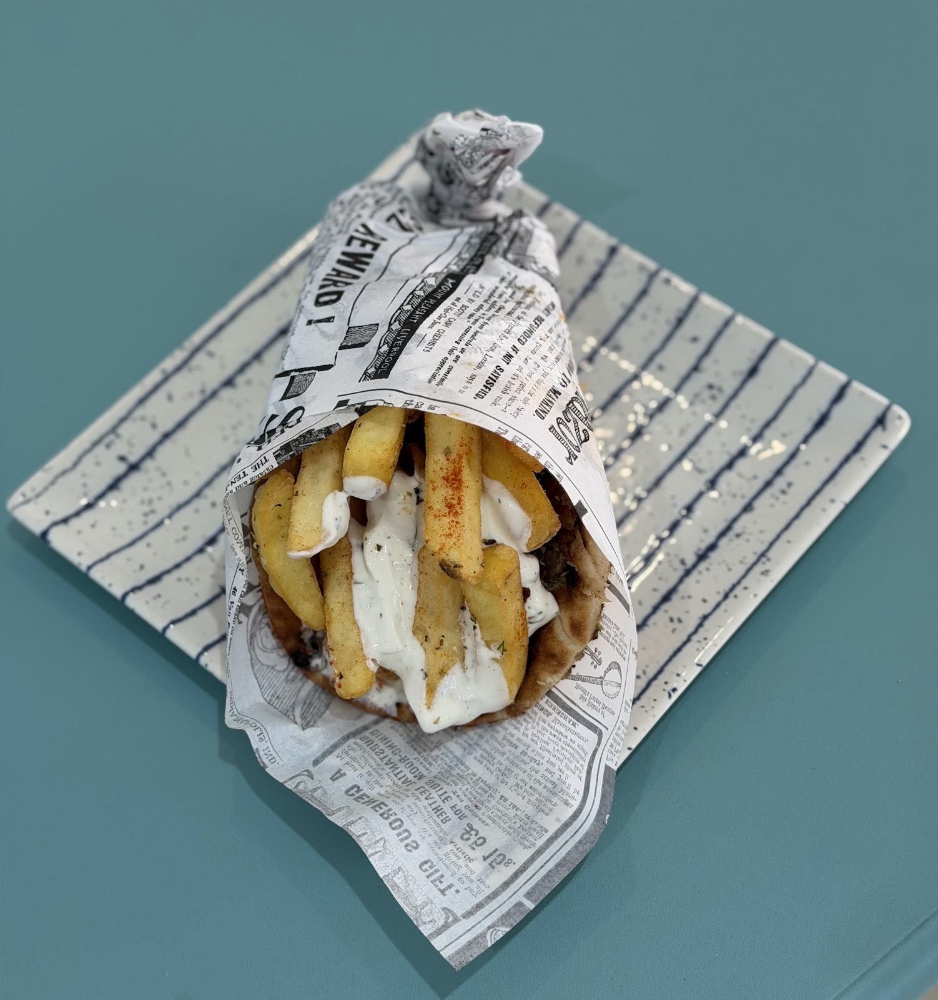
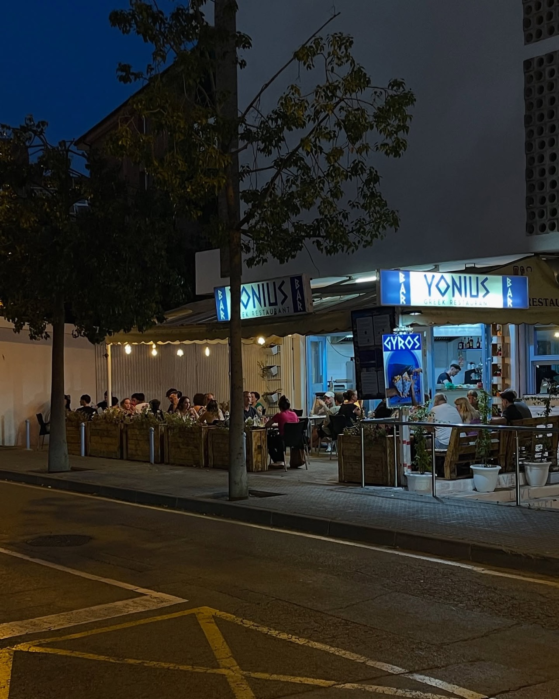

Restaurante griego · Lloret de Mar
Grecia, a la vuelta de la esquina.
Gyros recién cortados, souvlaki a la brasa, musaka gratinada y baklava con miel. Cocina griega de verdad, en una terraza llena de flores.
- 4,7★ en Google
386 reseñas - 12–23:30Martes a domingo
Lunes cerrado
Una tradición muy griega
¡Opa! Rompe un plato.
En Grecia los platos se rompen cuando la fiesta lo merece. Aquí cada plato roto te descubre algo de nuestra carta. Toca el plato… y que suene.
Καλή όρεξη
¿Qué te toca hoy?
Rompe el plato y te lo decimos. Cada uno esconde un plato distinto de la carta.
La carta
Para picar, para compartir,
para repetir.

Precios con IVA incluido. Pan de pita extra: 1,00 €. Pregunta al servicio por alérgenos e intolerancias.
@yonius_greek_restaurant
Flores, guirnaldas
y noches largas.
Arrastra para girar. Toca una foto para verla en grande.
Desde Instagram
Así suena una
noche en Yonius.
La terraza se llena cuando cae el sol: luces encendidas, platos que van y vienen y el olor del gyros dando vueltas.
Seguir en Instagram4,7 en Google
386 reseñas. Esto es lo que más se repite.
Visítanos
Carrer de Narcís Macià
i Domènech, 7
17310 Lloret de Mar · Girona
—
